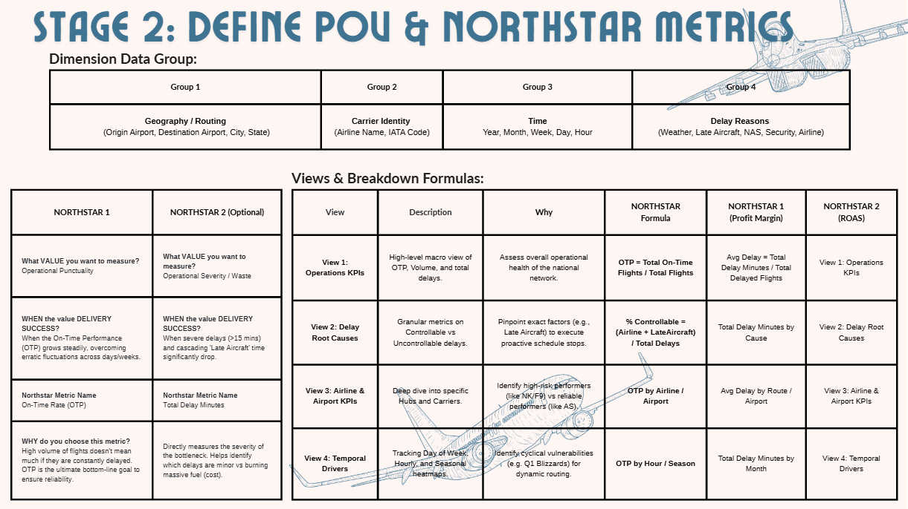

01. Business Challenge
Airlines operate thousands of daily cross-country flights and face significant logistical challenges related to weather, air systems, security, and internal carrier operations. Leadership and aviation authorities needed a consolidated, data-driven view to answer three critical strategic questions:
- Operational Efficiency: How efficiently are airlines operating across the national network? Stakeholders needed to know if delays are systemic or isolated to specific airlines or airports — tracking Scheduled vs. Actual Times, Delay Minutes, Cancellation Counts, and Carrier Performance.
- Root Cause Analysis: What are the primary drivers of flight delays and cancellations? Linking top-level delays to their root causes (Weather, Security, NAS, Late Aircraft) reveals whether delays are controllable, enabling better strategic buffer planning.
- Route & Airline Optimization: Which routes and airlines should be optimized or investigated? Identifying "Star" punctual routes guides future benchmarks, while discovering underperforming hubs dictates resource reallocation.
02. My Approach
To build a practical and effective analytical dashboard, I applied principles from Stanford's Design Thinking process, walking through the problem from the perspective of an Airline Operations Director and Flight Scheduler:
Empathize & Define
First, I identified key stakeholders — Airline Operations Directors needing national airspace efficiency views, and Flight Schedulers tracking granular metrics like Average Delay by Airline, Route, or Time of Day.
Prototype & Test
I started by designing low-fidelity layouts, then built test versions in Power BI. Each iteration addressed stakeholder reporting needs — Punctuality view, Root Cause view, Hub Efficiency view — constantly checking against initial goals.
Finalize & Find Insights
Once the dashboard design was finalized, I performed dynamic analysis on the discovered insights and drew tactical recommendations for Flight Operations leadership, presented via an analytical walkthrough.
03. Design Thinking
Step 1. Empathize
Identify the stakeholder's goals — understanding what airline leadership and flight schedulers need to see — and map the underlying operational problems.
Step 2. Define
Clearly define the core questions and the KPIs the dashboard must address — On-Time Performance, Delay Composition, Cancellation Rate, and Route Efficiency.

Step 3. Ideate
Brainstorm data visualization layouts — deciding which chart types, spatial maps, and drill-through pages best tell the aviation performance story.
Step 4. Prototype & Step 5. Test
Continuously prototype and test across multiple iterations — gathering feedback to refine the operational dashboards significantly across the Punctuality, Root Cause, and Hub Efficiency views.
04. Data Preparation & Modeling
1. Data Source Overview
The dataset captures domestic flight operations, airline catalogs, airport locations, and granular delay/cancellation performance across the US for the year 2015. It is the renowned "2015 Flight Delays and Cancellations" dataset sourced from Kaggle, originally published by the U.S. Department of Transportation (US DOT).
fact-flights: Over 5.8+ million recordsdim-airports: ~322 recordsdim-airlines: ~14 recordsdim-cancellation_codes: 4 records
2. Building the Star Schema Model
The Power BI data model follows a Star Schema structure, integrating multiple data sources to enable cross-filtering between flight operations and geographic/carrier outcomes:
- Fact Table (
flights): Contains granular flight details — dates, flight numbers, airline, origin/destination airports, and additive operational metrics likeDEPARTURE_DELAY,ARRIVAL_DELAY,AIR_SYSTEM_DELAY,WEATHER_DELAY,DISTANCE, andELAPSED_TIME. - Dimension Tables:
airports(role-playing dimension for Origin/Destination),airlines(IATA code → full name),cancellation_codes(reason mapping), andDimDate(time-intelligence with Day of Week, Month, Is Weekend).
3. Table Relationships
The schema connects the central flights fact table to dimension tables via 1-to-many relationships with single-direction cross-filtering. Notably, the airports dimension acts as a role-playing dimension with two relationship lines — one for ORIGIN_AIRPORT and one for DESTINATION_AIRPORT.
05. Visualizations
ℹ️ How to Use This Dashboard
- Optimal Viewing: Click the Fit to page icon or the Full screen arrows at the bottom right corner of the dashboard for the best experience.
- Exploration: Navigate between the core pages (Landing, Flight Summary, Root Cause, Hub & Route, Temporal) using the top buttons or bottom pagination.
- Interaction: Use the side dropdowns to filter data, toggle metric buttons to change chart views, click on any chart element to cross-filter the entire page, and hover over data points to reveal detailed tooltips.
06. Key Insights & Recommendations
Key Insights
1. 82.1% On-Time, But Delays Are Severe
The national system operates at an 82.1% On-Time Performance (OTP), but efficiency is highly polarized. Carriers like Hawaiian and Alaska perform exceptionally well (>87%), while low-cost carriers (Spirit, Frontier) drag down the network. Critically, when flights are delayed, the average arrival delay is a severe 61 minutes — not minor deviations.
2. 72% of Delays Are Controllable
Contrary to popular belief, 72% of delay minutes are entirely controllable by airlines — chiefly "Late Aircraft" cascading delays (39.8%) and internal "Airline Delays" (32.2%). Weather only accounts for massive, isolated spikes (e.g., Q1 winter blizzards), challenging the common narrative that weather is the primary villain.
3. The Evening Cascade Effect
The "Average Delay by Hour" chart reveals a classic cascading failure. Delays spike dramatically during evening peak hours (16:00–19:59), accounting for 32% of all delayed flights. Minor morning disruptions constantly snowball — each delayed aircraft becomes the "late arriving aircraft" for the next leg, creating a domino effect.
4. Critical Routes & Hub Bottlenecks
The absolute worst route for arrival delays is DFW → HNL (Dallas to Honolulu) averaging a massive 28.5 minutes delay per flight. This is followed by weather-prone ORD → ASE (Aspen) at 22.2 mins and congested DCA → JFK at 20.9 mins. Major hubs like ORD and JFK act as choke points for the entire network.
Strategic Recommendations
- Audit Regional Carrier Schedules: Mandate immediate buffer block reviews for Envoy Air (MQ) and ExpressJet (EV) to reduce their >5% cancellation rates. Nearly 40% of all delay minutes are from "Late Aircraft" cascading failures.
- Targeted Route Restructuring: Re-evaluate block times for the worst-performing routes: DFW→HNL, ORD→ASE, and DCA→JFK. Adding 10–15 minutes of scheduled ground time for high-risk regional carriers can break the cascade.
- Predictive Winter Rerouting: Build dynamic scheduling protocols modeled around historical catastrophe dates (Jan 27, Mar 5). Proactively cancel vulnerable routes like ORD→ASE during expected storms 48 hours in advance.
- Hub Pushback Optimization: Partner with FAA and ATC to implement pushback metering programs at JFK and ORD — holding aircraft at gates instead of burning fuel on the tarmac.
- Reserve Aircraft Allocation: Station spare aircraft at high-delay hubs to limit the domino effect when incoming flights are delayed.
Prioritized Action Roadmap
| Priority | Action | Expected Impact | Timeline |
|---|---|---|---|
| 🔴 P1 | Audit Regional Carrier Schedules: Mandate buffer block reviews for Envoy Air (MQ) and ExpressJet (EV). | Recover Network Punctuality & Brand Trust | Immediate |
| 🔴 P1 | Targeted Route Restructuring: Re-evaluate block times for DFW→HNL, ORD→ASE, DCA→JFK. | Reduce "Late Aircraft" tail-delays on severe routes | Q3 Schedule |
| 🟠 P2 | Redesign Pushback Sequencing at JFK and ORD. | Reduce fuel burn and taxi-out bottlenecks | Sprint 2 |
| 🟠 P2 | Predictive Winter Rerouting: Dynamic scheduling protocols for Q1 blizzard dates. | Mitigate total network paralysis | Sprint 3 |
| 🟡 P3 | Allocate Reserve Aircraft at high-delay hubs. | Limit domino effect on late incoming flights | 6 Months |
07. Deep Dive: Route & Airline Optimization
Core Diagnosis #1: Cascading Late Aircraft Delays
Regional carriers are buckling under tight turnarounds. The data shows Envoy Air (MQ) hits a catastrophic 5.1% cancellation rate due to these cascading failures. Nearly 40% of all delay minutes are categorized as 'Late Aircraft'.
- Root Cause: Point-to-point networks with rapid turnaround goals create fragility — one delayed leg cascades through the entire day's schedule.
- Action: Implement strategic buffer blocks in afternoon schedules, adding 10–15 minutes of scheduled ground time specifically for high-risk regional carriers.
- Target: High-frequency routes like DCA to JFK where cascading failures are most severe.
Core Diagnosis #2: Geographic Weather Susceptibility
The network entirely breaks down during major winter anomalies. Data points precisely to January 27th and March 5th where massive blizzards caused nearly 3,000 cancellations in a single day each.
- Root Cause: No proactive rerouting — airlines wait for conditions to deteriorate before reacting.
- Action: Adopt dynamic re-routing algorithms for expected storm corridors at major mid-western hubs (ORD) 48 hours in advance.
- Target: Proactively cancel vulnerable routes like ORD→ASE (Aspen) which already averages 22.2 minutes of delay natively.
Core Diagnosis #3: Sub-Optimal Taxi Times at Major Hubs
Extensive ground congestion at coastal airports (JFK, LGA, SFO) contributes to high taxi-out times, burning excess jet fuel and cascading delays back into the airspace system.
- Root Cause: Aircraft pushed back from gates into long ground queues without metering.
- Action: Partner with FAA and ATC to implement better pushback metering programs, holding aircraft at the gates rather than burning fuel in line on the tarmac.
- Expected Savings: Millions of dollars annually per major carrier in reduced fuel burn alone.
📊 Expected Business Impact
- Cost Savings: Reduced fuel burn from pushback metering — millions of dollars annually per major carrier.
- OTP Improvement: Targeting an industry-wide push above 85% OTP (from current 82.1%).
- Customer Satisfaction (NPS): Significant reduction in passenger distress from cascading cancellations and late-night stranding.
Source Code & Details
Explore the full data model, DAX measures, and dashboard files on GitHub.
⌨ View on GitHub →